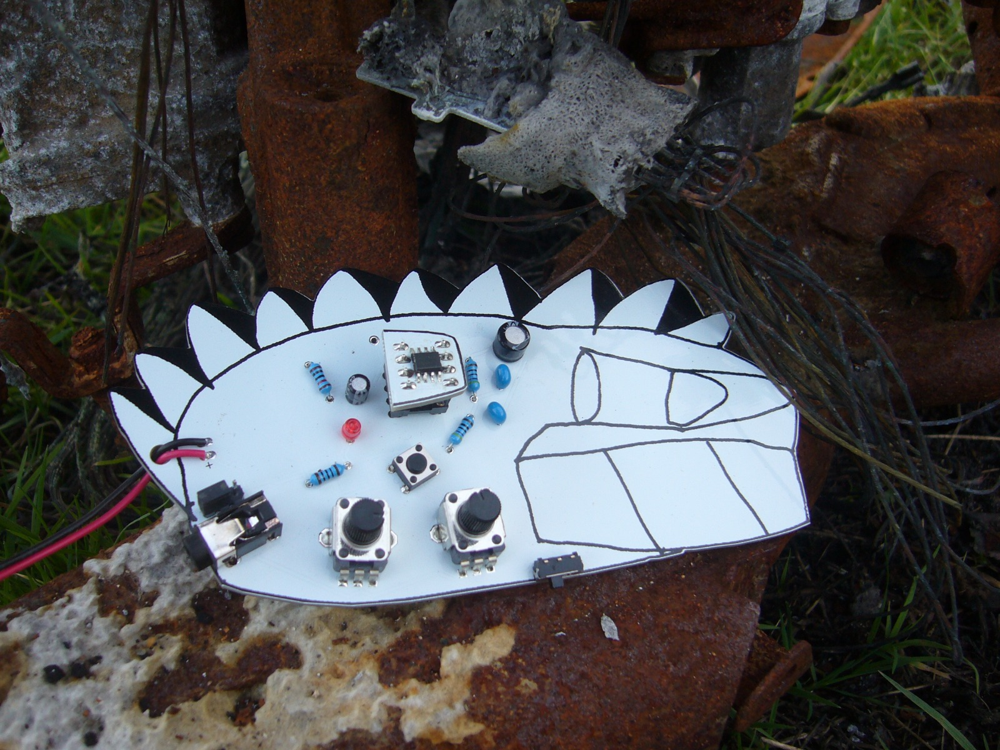

listen
more roar is an entropic synthesiser that uses FM synthesis techniques to blend waveforms together. the sound it produces has some distinct characteristics, which we've produced some demos of, included here. no reverb!
the synth has 9 programs categorised into 3 groups (3 programs per group) with 6 entropy functions ... triangle_smash (waveform mashup), XOR bitwise operation (waveshape/reshape), top2bottom (waveform inversion), bitcrush (waveform resolution reduction), clip (DC offset), and shuffle (noise).
more on soundcloud
water sounds
bell sounds -- classic fm!
speaking/stretching sounds
computer sounds
scratching/flocking - animal sounds